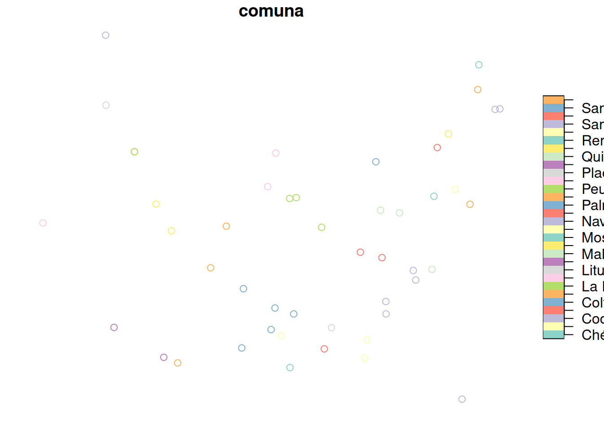

set.seed(9999)Evaluación 1
SIG Avanzado (IMSE1017)
1 Parte 1: Estructuras y manipulación de datos en R
- (5pts) Cree los siguientes objetos de tipo vector
- exVec1 con los números: 45, -45, -10, -48, 23
- exVec2 con los números: 15, NA, -43, -20, -42
- exVec3 con la sequencia -5 a 5 cada 0.5 (ej, -5.0, -4.5, -4.0, y así hasta 5.0)
exVec1 <- c(45, -45, -10, -48, 23)
exVec2 <- c(15, NA, -43, -20, -42)
exVec3 <- seq(from=-5,to=5,by=0.5)- (5pts) Junte los vectores
exVec1conexVec2y guardelos en un nuevo vector llamadoexVec_resultado(usando una sóla linea). Muestre el resultado.
exVec_resultado <- c(exVec1,exVec2)
exVec_resultado [1] 45 -45 -10 -48 23 15 NA -43 -20 -42(5pts) Usando indexación con paréntesis cuadrado:
- devuelva el 3er elemento del vector
exVec1
- devuelva todo menos el 2do y 3er elemento en
exVec2
- devuelva el 3er elemento del vector
exVec1 #vector[1] 45 -45 -10 -48 23exVec1[3] #tercer elemento del vector[1] -10exVec2 #vector[1] 15 NA -43 -20 -42exVec2[c(-2,-3)] #2do y 3er elemento del vector[1] 15 -20 -42- (15pts) Use funciones u operadores de relación para:
- (3pts) mostrar la cantidad de elementos de cada uno de los vectores creados arriba.
length(exVec1)[1] 5length(exVec2)[1] 5- (3pts) determinar la suma de elementos en el vector
exVec1.
sum(exVec1)[1] -35- (3pts) determinar el promedio del vector
exVec2usando la funciónmean(nota: revisar el argumento na.rm de la función mean)
res1 <- mean(exVec2,na.rm = TRUE)- (3pts) calcular el promedio de el vector
exVec2ahora utilizando las funcionessum,length, yna.omit
a <- na.omit(exVec2)
res2 <- sum(a)/length(a)- (3pts) muestre que los calculos del punto 3 y 4 son los mismos equivalentes/identicos
res1 == res2[1] TRUEidentical(res1,res2)[1] TRUE- (10pts) Explique que hace la siguiente operación e indique ¿por qué?
rnorm(6) + rnorm(2)[1] -1.3796478 -0.6174281 1.0038032 0.5572989 -0.8665116 0.6425270#suma un vector que tiene 5 elementos correspondientes
#a valores aleatorios con otro que tiene 10 elementos
# aleatorios. En este caso tambien se aplica la funcionalidad
# de vectores reciclados, ya que el primer vector tiene 5
# elementos y el segundo diez elementos, por lo que el
# primero se recicla dos veces para poder ser sumado al
# segundo vector.- (10pts) Cuáles son los tipos de vectores en R, de un ejemplo de cada caso.
# En R existen dos tipos de vectores,
# 1) vectores atómicos y
# 2) vectores de tipo listas
v1 <- 1:5 #vector atómico
v2 <- list(1,2,4,'a',matrix(1:9,3)) #vector de tipo lista- (10pts) De un ejemplo de una lista que contenga como primer elemento un vector lógico, como segundo una matriz 3x3, y como tercer el
data.framemtcars
l <- list(c(TRUE,FALSE,FALSE, TRUE),
matrix(9:1,3,3,3),
mtcars)
l[[1]]
[1] TRUE FALSE FALSE TRUE
[[2]]
[,1] [,2] [,3]
[1,] 9 8 7
[2,] 6 5 4
[3,] 3 2 1
[[3]]
mpg cyl disp hp drat wt qsec vs am gear carb
Mazda RX4 21.0 6 160.0 110 3.90 2.620 16.46 0 1 4 4
Mazda RX4 Wag 21.0 6 160.0 110 3.90 2.875 17.02 0 1 4 4
Datsun 710 22.8 4 108.0 93 3.85 2.320 18.61 1 1 4 1
Hornet 4 Drive 21.4 6 258.0 110 3.08 3.215 19.44 1 0 3 1
Hornet Sportabout 18.7 8 360.0 175 3.15 3.440 17.02 0 0 3 2
Valiant 18.1 6 225.0 105 2.76 3.460 20.22 1 0 3 1
Duster 360 14.3 8 360.0 245 3.21 3.570 15.84 0 0 3 4
Merc 240D 24.4 4 146.7 62 3.69 3.190 20.00 1 0 4 2
Merc 230 22.8 4 140.8 95 3.92 3.150 22.90 1 0 4 2
Merc 280 19.2 6 167.6 123 3.92 3.440 18.30 1 0 4 4
Merc 280C 17.8 6 167.6 123 3.92 3.440 18.90 1 0 4 4
Merc 450SE 16.4 8 275.8 180 3.07 4.070 17.40 0 0 3 3
Merc 450SL 17.3 8 275.8 180 3.07 3.730 17.60 0 0 3 3
Merc 450SLC 15.2 8 275.8 180 3.07 3.780 18.00 0 0 3 3
Cadillac Fleetwood 10.4 8 472.0 205 2.93 5.250 17.98 0 0 3 4
Lincoln Continental 10.4 8 460.0 215 3.00 5.424 17.82 0 0 3 4
Chrysler Imperial 14.7 8 440.0 230 3.23 5.345 17.42 0 0 3 4
Fiat 128 32.4 4 78.7 66 4.08 2.200 19.47 1 1 4 1
Honda Civic 30.4 4 75.7 52 4.93 1.615 18.52 1 1 4 2
Toyota Corolla 33.9 4 71.1 65 4.22 1.835 19.90 1 1 4 1
Toyota Corona 21.5 4 120.1 97 3.70 2.465 20.01 1 0 3 1
Dodge Challenger 15.5 8 318.0 150 2.76 3.520 16.87 0 0 3 2
AMC Javelin 15.2 8 304.0 150 3.15 3.435 17.30 0 0 3 2
Camaro Z28 13.3 8 350.0 245 3.73 3.840 15.41 0 0 3 4
Pontiac Firebird 19.2 8 400.0 175 3.08 3.845 17.05 0 0 3 2
Fiat X1-9 27.3 4 79.0 66 4.08 1.935 18.90 1 1 4 1
Porsche 914-2 26.0 4 120.3 91 4.43 2.140 16.70 0 1 5 2
Lotus Europa 30.4 4 95.1 113 3.77 1.513 16.90 1 1 5 2
Ford Pantera L 15.8 8 351.0 264 4.22 3.170 14.50 0 1 5 4
Ferrari Dino 19.7 6 145.0 175 3.62 2.770 15.50 0 1 5 6
Maserati Bora 15.0 8 301.0 335 3.54 3.570 14.60 0 1 5 8
Volvo 142E 21.4 4 121.0 109 4.11 2.780 18.60 1 1 4 2- (15 pts) Muestre tres formas de indexar la primera columna del
data.frameiris
#forma 1
iris[,1] [1] 5.1 4.9 4.7 4.6 5.0 5.4 4.6 5.0 4.4 4.9 5.4 4.8 4.8 4.3 5.8 5.7 5.4 5.1
[19] 5.7 5.1 5.4 5.1 4.6 5.1 4.8 5.0 5.0 5.2 5.2 4.7 4.8 5.4 5.2 5.5 4.9 5.0
[37] 5.5 4.9 4.4 5.1 5.0 4.5 4.4 5.0 5.1 4.8 5.1 4.6 5.3 5.0 7.0 6.4 6.9 5.5
[55] 6.5 5.7 6.3 4.9 6.6 5.2 5.0 5.9 6.0 6.1 5.6 6.7 5.6 5.8 6.2 5.6 5.9 6.1
[73] 6.3 6.1 6.4 6.6 6.8 6.7 6.0 5.7 5.5 5.5 5.8 6.0 5.4 6.0 6.7 6.3 5.6 5.5
[91] 5.5 6.1 5.8 5.0 5.6 5.7 5.7 6.2 5.1 5.7 6.3 5.8 7.1 6.3 6.5 7.6 4.9 7.3
[109] 6.7 7.2 6.5 6.4 6.8 5.7 5.8 6.4 6.5 7.7 7.7 6.0 6.9 5.6 7.7 6.3 6.7 7.2
[127] 6.2 6.1 6.4 7.2 7.4 7.9 6.4 6.3 6.1 7.7 6.3 6.4 6.0 6.9 6.7 6.9 5.8 6.8
[145] 6.7 6.7 6.3 6.5 6.2 5.9#forma 2
iris$Sepal.Length [1] 5.1 4.9 4.7 4.6 5.0 5.4 4.6 5.0 4.4 4.9 5.4 4.8 4.8 4.3 5.8 5.7 5.4 5.1
[19] 5.7 5.1 5.4 5.1 4.6 5.1 4.8 5.0 5.0 5.2 5.2 4.7 4.8 5.4 5.2 5.5 4.9 5.0
[37] 5.5 4.9 4.4 5.1 5.0 4.5 4.4 5.0 5.1 4.8 5.1 4.6 5.3 5.0 7.0 6.4 6.9 5.5
[55] 6.5 5.7 6.3 4.9 6.6 5.2 5.0 5.9 6.0 6.1 5.6 6.7 5.6 5.8 6.2 5.6 5.9 6.1
[73] 6.3 6.1 6.4 6.6 6.8 6.7 6.0 5.7 5.5 5.5 5.8 6.0 5.4 6.0 6.7 6.3 5.6 5.5
[91] 5.5 6.1 5.8 5.0 5.6 5.7 5.7 6.2 5.1 5.7 6.3 5.8 7.1 6.3 6.5 7.6 4.9 7.3
[109] 6.7 7.2 6.5 6.4 6.8 5.7 5.8 6.4 6.5 7.7 7.7 6.0 6.9 5.6 7.7 6.3 6.7 7.2
[127] 6.2 6.1 6.4 7.2 7.4 7.9 6.4 6.3 6.1 7.7 6.3 6.4 6.0 6.9 6.7 6.9 5.8 6.8
[145] 6.7 6.7 6.3 6.5 6.2 5.9#forma 3
iris[,'Sepal.Length'] [1] 5.1 4.9 4.7 4.6 5.0 5.4 4.6 5.0 4.4 4.9 5.4 4.8 4.8 4.3 5.8 5.7 5.4 5.1
[19] 5.7 5.1 5.4 5.1 4.6 5.1 4.8 5.0 5.0 5.2 5.2 4.7 4.8 5.4 5.2 5.5 4.9 5.0
[37] 5.5 4.9 4.4 5.1 5.0 4.5 4.4 5.0 5.1 4.8 5.1 4.6 5.3 5.0 7.0 6.4 6.9 5.5
[55] 6.5 5.7 6.3 4.9 6.6 5.2 5.0 5.9 6.0 6.1 5.6 6.7 5.6 5.8 6.2 5.6 5.9 6.1
[73] 6.3 6.1 6.4 6.6 6.8 6.7 6.0 5.7 5.5 5.5 5.8 6.0 5.4 6.0 6.7 6.3 5.6 5.5
[91] 5.5 6.1 5.8 5.0 5.6 5.7 5.7 6.2 5.1 5.7 6.3 5.8 7.1 6.3 6.5 7.6 4.9 7.3
[109] 6.7 7.2 6.5 6.4 6.8 5.7 5.8 6.4 6.5 7.7 7.7 6.0 6.9 5.6 7.7 6.3 6.7 7.2
[127] 6.2 6.1 6.4 7.2 7.4 7.9 6.4 6.3 6.1 7.7 6.3 6.4 6.0 6.9 6.7 6.9 5.8 6.8
[145] 6.7 6.7 6.3 6.5 6.2 5.9- (10 pts) Señale cuál es la diferencia en el resultado de los dos códigos que se aplican a la matriz m.
m <- matrix(1:9,3)
# en el siguiente caso se extrae el vector númerico almacenado en la matriz
#codigo 1
m[,1][1] 1 2 3#en el siguiente caso se extrae la matriz de 3x1 que contiene sólo los elementos de la primera columna
#codigo 2
m[,1,drop = FALSE] [,1]
[1,] 1
[2,] 2
[3,] 3- (10pts) Haga una union por por columna de las matrices
m1ym2.
m1 <- matrix(1:sample(seq(9,18,3),1),3)
m2 <- matrix(1:sample(seq(9,18,3),1),3)
cbind(m1,m2) [,1] [,2] [,3] [,4] [,5] [,6] [,7] [,8]
[1,] 1 4 7 10 1 4 7 10
[2,] 2 5 8 11 2 5 8 11
[3,] 3 6 9 12 3 6 9 12- (24pts) Respecto del
data.frameiris que vienen incorporados en R, realice lo siguiente:
- (6pts) Cree un nuevo data.frame de nombre iris2 que tenga las columnas Petal.Length, Petal.Width y Sepal.Length. Hágalo de dos maneras diferentes.
iris2 <- iris[,c('Petal.Length','Petal.Width','Sepal.Length')]- (6pts) Agregue una nueva columna “nueva_col” la que debe contener los valores de 1 hasta el número de filas del
data.frame.
iris$nueva_col <- 1:nrow(iris)- (6pts) Cree un nuevo data.frame iris3 en el que estén solo las filas 147, 101, 48, 71, 112. Hágalo de dos maneras diferentes.
iris3 <- iris[c(147, 101, 48, 71, 112),]- (6pts) Cree un nuevo data.frame iris4 en el que estén las filas que cumplen la condición Sepal.Lenght mayores o iguales que 6
iris4 <- iris[iris$Sepal.Length >= 6,]- (10pts) De un ejemplo de un vector numérico, caracter y lógico. Cada vector debe contener 5 elementos. Luego con los tres vectores cree un
data.frameque tenga tres columnasnumeros,caracteresylogicos; en donde se almacene cada vector creado.
num <- 1:5
car <- letters[1:5]
log <- c(TRUE,TRUE,FALSE,FALSE,TRUE)- (25pts) Para los siguientes ejercicios utilice el
data.frameiris
Use funciones para mostrar:
data(iris)
?mtcars- (5pts) la estructura del set de datos
str(iris)'data.frame': 150 obs. of 5 variables:
$ Sepal.Length: num 5.1 4.9 4.7 4.6 5 5.4 4.6 5 4.4 4.9 ...
$ Sepal.Width : num 3.5 3 3.2 3.1 3.6 3.9 3.4 3.4 2.9 3.1 ...
$ Petal.Length: num 1.4 1.4 1.3 1.5 1.4 1.7 1.4 1.5 1.4 1.5 ...
$ Petal.Width : num 0.2 0.2 0.2 0.2 0.2 0.4 0.3 0.2 0.2 0.1 ...
$ Species : Factor w/ 3 levels "setosa","versicolor",..: 1 1 1 1 1 1 1 1 1 1 ...- (5pts) el número de columnas y de filas del set de datos
ncol(iris)[1] 5nrow(iris)[1] 150dim(iris)[1] 150 5- (5pts) el nombre de las columnas del set de datos
colnames(iris)[1] "Sepal.Length" "Sepal.Width" "Petal.Length" "Petal.Width" "Species" names(iris)[1] "Sepal.Length" "Sepal.Width" "Petal.Length" "Petal.Width" "Species" - (5pts) el encabezado del set de datos
head(iris) Sepal.Length Sepal.Width Petal.Length Petal.Width Species
1 5.1 3.5 1.4 0.2 setosa
2 4.9 3.0 1.4 0.2 setosa
3 4.7 3.2 1.3 0.2 setosa
4 4.6 3.1 1.5 0.2 setosa
5 5.0 3.6 1.4 0.2 setosa
6 5.4 3.9 1.7 0.4 setosa- (5pts) los últimos seis elementos del set de datos
tail(iris) Sepal.Length Sepal.Width Petal.Length Petal.Width Species
145 6.7 3.3 5.7 2.5 virginica
146 6.7 3.0 5.2 2.3 virginica
147 6.3 2.5 5.0 1.9 virginica
148 6.5 3.0 5.2 2.0 virginica
149 6.2 3.4 5.4 2.3 virginica
150 5.9 3.0 5.1 1.8 virginica- (15pts) ¿Cuál es la diferencia entre un objeto de clase
data.framey uno de clasesf?
# Los objetos sf sirven para almacena estructuras de datos geoespaciales
# vectoriales, los data.frame permitehn trabajar con datos tabulados. Los
# objetos sf estan formados por un data.frame (atributos) y una columna sfc # que almacena las geometrias.2 Parte 2: Manejo de archivos
Datos: Descargue los archivos desde este link
- (50pts) Con el archivo que se encuentra en formato CSV :
- (10pts) Cargue el archivo en formato CSV en R y asignelo al objeto
data
data <- read.csv('data_5/datos_ema_309.csv')- (10pts) De un resumen de la estructura de los datos de
data(clase, variables, observaciones).
str(data)'data.frame': 24 obs. of 13 variables:
$ station_id : int 309 309 309 309 309 309 309 309 309 309 ...
$ fecha_hora : chr "2023-10-03T00:00:00Z" "2023-10-03T01:00:00Z" "2023-10-03T02:00:00Z" "2023-10-03T03:00:00Z" ...
$ temp_promedio_aire : num 15.2 15.3 15.3 15.2 15.2 15.1 15.1 15.3 16.1 17.4 ...
$ precipitacion_horaria: int 0 0 0 0 0 0 0 0 0 0 ...
$ humed_rel_promedio : num 83.7 83.6 83.6 83.4 83.1 82.7 82.6 80.4 75.1 68.5 ...
$ presion_atmosferica : num 956 956 956 956 956 ...
$ radiacion_solar_max : num 0 0 0 0 0 ...
$ veloc_max_viento : num 0.9 0.9 0.6 1.2 0.2 1 0.8 1.3 0.6 0.9 ...
$ temp_minima : num 15.2 15.2 15.2 15.1 15.1 15.1 15.1 15.2 15.7 16.8 ...
$ temp_maxima : num 15.2 15.3 15.3 15.3 15.2 15.2 15.1 15.5 16.4 18 ...
$ direccion_del_viento : num 284 284 285 291 346 ...
$ grados_dia : num 661 NA NA NA NA ...
$ horas_frio : logi NA NA NA NA NA NA ...- (10pts) Seleccione las observaciones que son mayores al promedio de la humedad relativa promedio.
#promedio de la columna humedad relativa promedio
hum_rel_prom <- mean(data$humed_rel_promedio,na.rm = TRUE)
#seleccion de los valores mayores al promedio
data2 <- data[data$humed_rel_promedio > hum_rel_prom,]- (10pts) Con el set de datos resultado anterior, seleccione las variables de fecha_hora, humed_rel_promedio, veloc_max_viento.
data3 <- data2[,c('fecha_hora','humed_rel_promedio','veloc_max_viento')]- (10pts) Con el
data.frameresultante de las operaciones anteriores guardelo en un archivo con formato CSV (“datos_21.csv”) con configuración latina.
write.csv2(data3,'data_5/datos_21.csv')- (80pts) Con el archivo que se encuentra en formato Geopackage:
- (10pts) Cargue el archivo en R y asígnelo al objeto
geo.
#install.packages('sf)
library(sf)Linking to GEOS 3.11.1, GDAL 3.6.2, PROJ 9.1.1; sf_use_s2() is TRUEgeo <- read_sf("data_5/region_O'Higgins.gpkg")- (10pts) ¿Qué clase de objeto es
geo?
class(geo)[1] "sf" "tbl_df" "tbl" "data.frame"- (10pts) Indique el tipo de geometría y la cantidad de geometrias que tiene
geo.
st_geometry(geo)Geometry set for 49 features
Geometry type: POINT
Dimension: XY
Bounding box: xmin: -71.98571 ymin: -34.81558 xmax: -70.63958 ymax: -33.92975
Geodetic CRS: WGS 84
First 5 geometries:POINT (-70.93528 -34.362)POINT (-70.97553 -34.57783)POINT (-71.3238 -34.29808)POINT (-71.03167 -34.67083)POINT (-70.63958 -34.10889)- (10pts) ¿Cuántas variables y observaciones tiene
geo?
# 6 variables y 49 observaciones- (20pts) Haga un mapa en donde se muestre la variación de la variable comuna.
plot(geo[,'comuna'])
- (20pts) Seleccione todas las estaciones que pertenecen a la institución
INIA.
geo[geo$institucion == 'INIA',]Simple feature collection with 7 features and 6 fields
Geometry type: POINT
Dimension: XY
Bounding box: xmin: -71.98571 ymin: -34.47099 xmax: -70.8339 ymax: -33.92975
Geodetic CRS: WGS 84
# A tibble: 7 × 7
ema institucion nombre_ema comuna region fecha_de_alta
<dbl> <chr> <chr> <chr> <chr> <dttm>
1 163 INIA El Tambo San Vicente O'Hig… 2013-03-08 03:49:12
2 260 INIA Hidango Litueche O'Hig… 2013-05-08 08:24:25
3 389 INIA El Arenal Quinta de Ti… O'Hig… 2017-05-05 06:51:48
4 483 INIA Puente Negro Pichilemu O'Hig… 2017-08-31 13:11:56
5 630 INIA Liceo Jean Buchanan Peumo O'Hig… 2018-03-07 09:04:06
6 653 INIA Licanchen Navidad O'Hig… 2019-12-05 06:58:28
7 667 INIA Rayentué Rengo O'Hig… 2020-03-30 12:23:20
# ℹ 1 more variable: geom <POINT [°]>